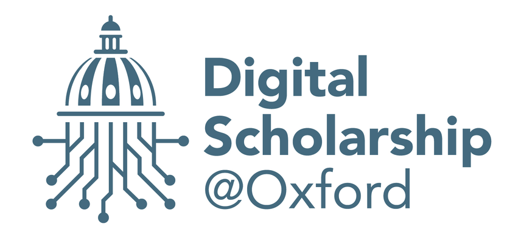

This case study was developed during a project hackathon organized by the Centre of Digital Scholarship at the Bodleian Library, where we explored medieval manuscript data and experimented with new ways of analysing it. Working collaboratively, we examined how languages were used in manuscripts over time, focusing particularly on their use in religious and non-religious texts.
The goal was to see whether certain languages were more common in certain texts and how this changed across the medieval and early modern periods.
The dataset comes from a large catalogue of medieval manuscripts that records detailed information about each item. The records include many different types of information, such as:
These categories allow researchers to study manuscripts not only as texts but also as physical objects and historical artefacts.
For this analysis we focused on manuscripts dated between 1100 and 1599. The original dataset contained 15,973 manuscript records. After cleaning the data, we worked with 11,191 manuscripts.
Records were removed if they did not include:
This allowed us to analyse the manuscripts more reliably.
Each manuscript in the catalogue is classified according to its subject. These categories help researchers understand the intellectual content of the collection. Examples include:
The manuscripts in our dataset are written in a range of languages, including:
Latin was the dominant language of scholarship and learning throughout the medieval period, and this is clearly reflected in the manuscripts.